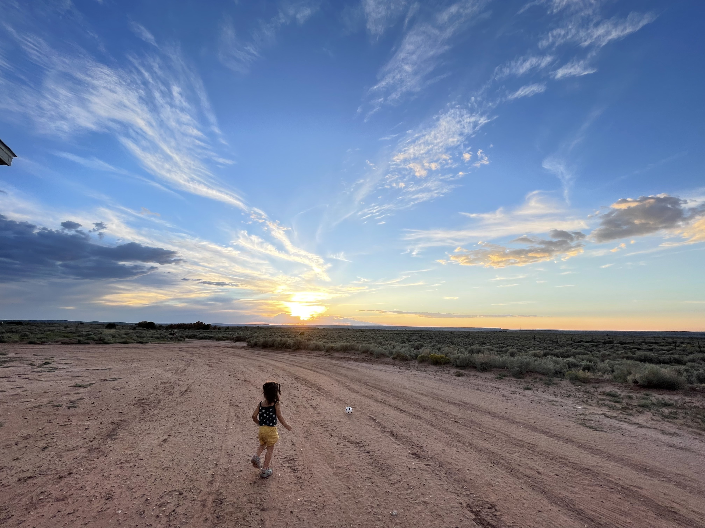

Welcome
I create warm, true-to-life images with an easygoing, guided approach. Scroll to see a few samples and learn more.



I create warm, true-to-life images with an easygoing, guided approach. Scroll to see a few samples and learn more.